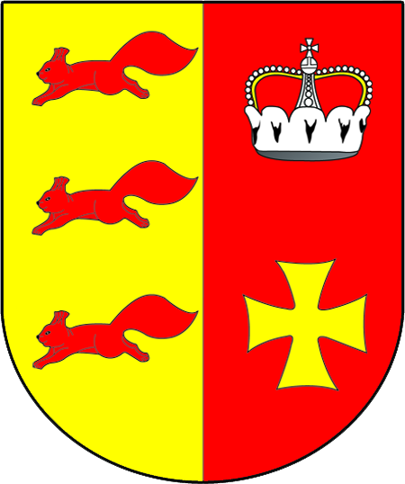
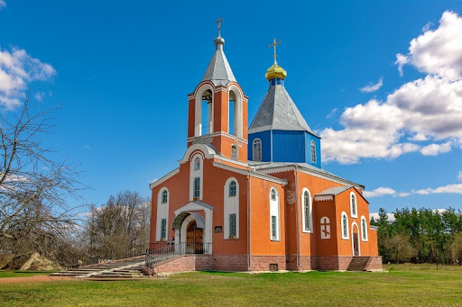

Акцябрскі раён
Кастрычніцкі раён, чыя плошча складае 1381,19 км2,
размешчаны на паўночным захадзе Гомельскай вобласці. Ён мяжуе з Петрыкаўскім, Калінкавіцкім, Светлагорскім, Бабруйскім,
Глускім і Любанскім раёнамі. Раўнінны рэльеф, які характэрны для гэтага рэгіёна, абумоўлены яго прыналежнасцю да Прыпяцкім Палессі.
Больш за палову яго тэрыторыі пакрытыя лесам. Самымі буйнымі рэкамі з'яўляюцца Пціч, Арэса і Трэмля.
Адміністрацыйны цэнтр – г.п. Акцябрскі. Па стане на 2016 год насельніцтва гэтага раёна складае 13.927,
у апошнія дзесяцігоддзі яно бесперапынна скарачаецца. Тэрыторыя дзеліцца на 8 сельскіх саветаў.
Аснову мясцовай эканомікі складаюць Сельская гаспадарка і перапрацоўка яго прадукцыі, таксама развіта нарыхтоўка драўніны.
Маецца асфальтавы завод, а непадалёк ад в. Любань вядзецца здабыча нафты ў прамысловых маштабах.
Пакроўская царква
На жаль, ад сядзібы "Рудабелка", якая некалі ўпрыгожвала раённы цэнтр, да нашых дзён амаль нічога не захавалася.
Яго галоўнымі славутасцямі з'яўляюцца Пакроўская царква, якая спалучае ў сабе традыцыі народнай архітэктуры з элементамі рэтраспектыўна-рускага стылю, а таксама
Касцёл св.Міхаіла Арханёла, які ўяўляе сабой сучасную інтэрпрэтацыю готыкі. Абодва храма былі пабудаваныя адносна нядаўна.

На працягу ўсёй фашысцкай акупацыі на тэрыторыі раёна дзейнічала савецкая ўлада. На востраве добры грунтаваліся партызанскія атрады, а таксама Мінскі падпольны абкам. Каб захаваць памяць аб тых часах, было вырашана стварыць музей пад адкрытым небам.
Гэта зямлянкі, усярэдзіне якіх адноўлена гістарычная абстаноўка.
У XIX стагоддзі жыхары в. Харомцы на ўваходзе ў мясцовыя могілкі ўсталявалі драўляную браму,
упрыгожаную незвычайным хвалістым арнаментам. Яна дае ўяўленне аб школе разьбы, якая існавала ў гэтых краях.
У цяперашні час арыгінал знаходзіцца ў музеі, а на яго месцы можна ўбачыць копію, вырабленую ўжо ў наш час.